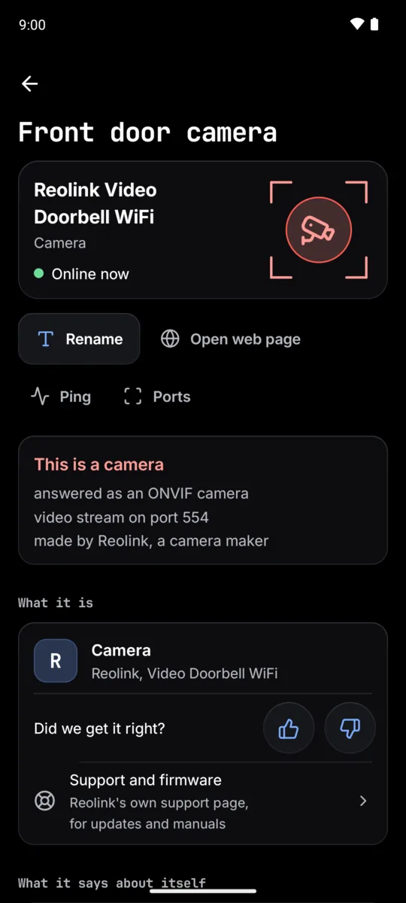
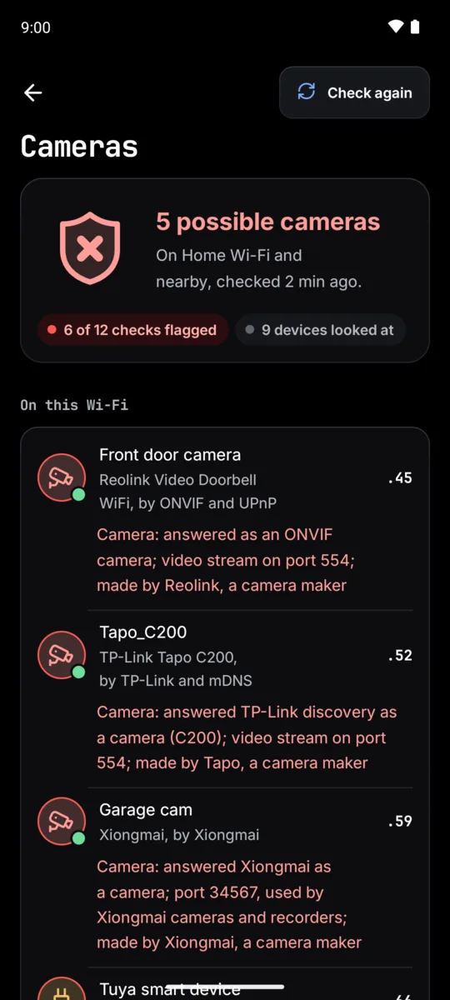
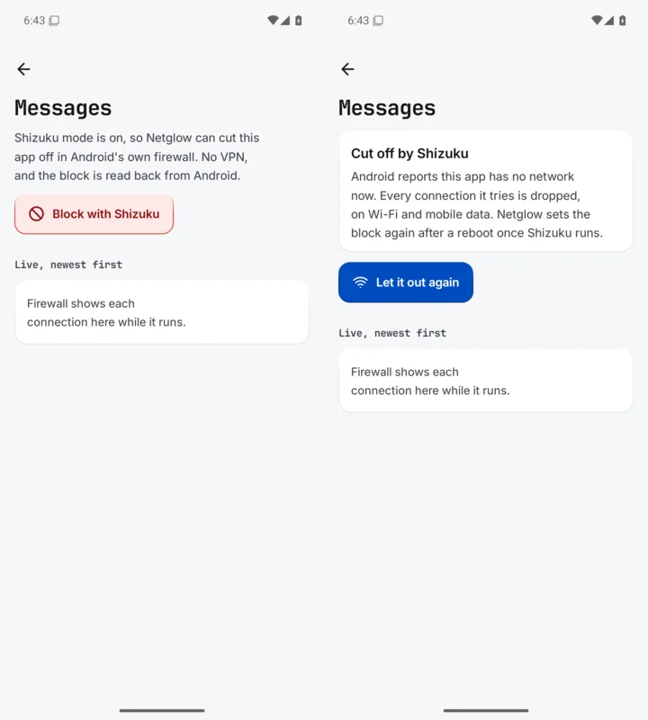
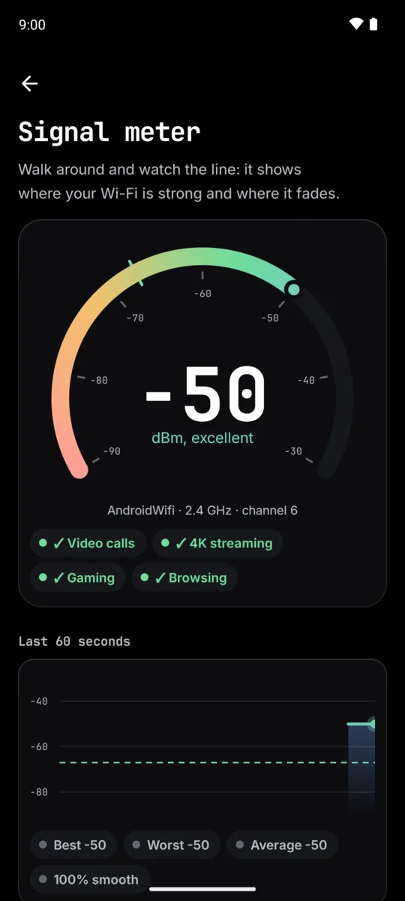
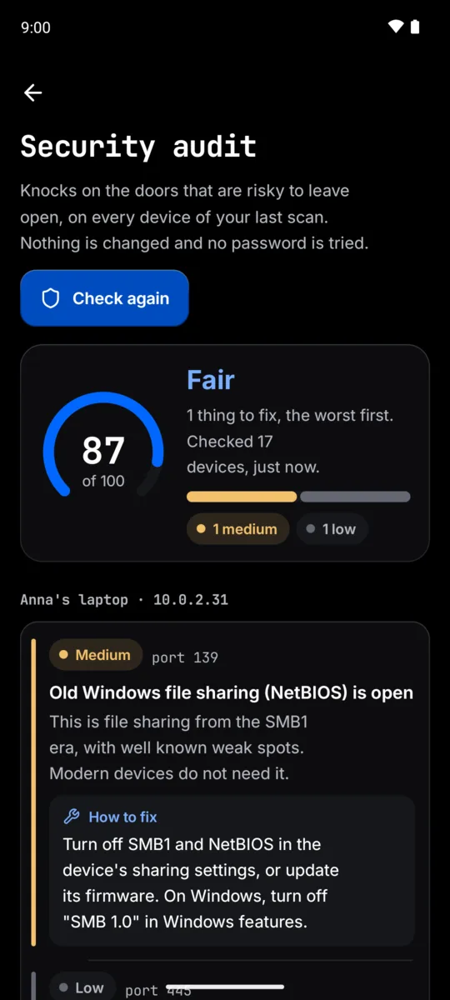
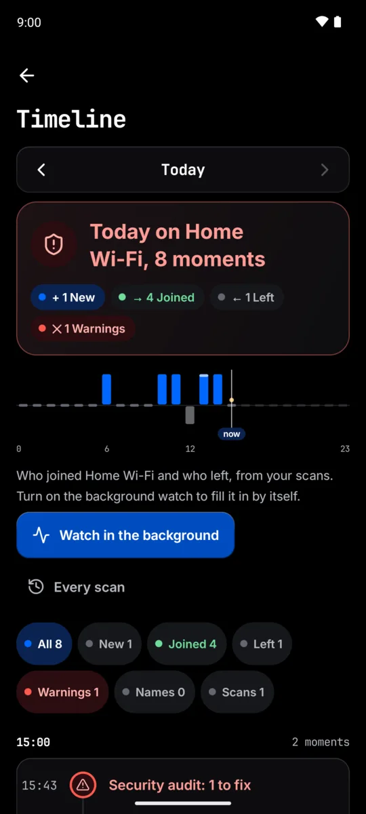

The guide
Everything Netglow does, screen by screen. Words in code style are what you see in the app.
Install
Get Netglow on Google Play. It runs on Android 10 or newer. Scans are free and unlimited, with no account and no ads. Words in code style are what you see in the app.
The bottom bar has four places: Home, Devices, Safety and Tools. Settings is the gear at the top right of Home.
Setup guide and power ups
The first time Netglow opens it shows five short screens: what it does, the two things Android will ask, alerts for new devices, the optional power ups, and a start. Skip leaves them at any point. On an update, or on a TV, they do not show.
The Setup guide
On Home, a Finish setup card counts the steps left. Tap it to open the Setup guide. Every step has a live mark that follows your phone, checked again every few seconds: done, next, to do, needs attention, checking, Pro, locked or not available on this phone.
Wi-Fi name: Android shows the name of your Wi-Fi only when location is allowed. It stays on your phone, and scans work without it.Nearby devices: needed to look at your home network on Android 17 and up.Alerts: a note when a new device joins. Nothing else.First scan.
If Android takes a permission back later, that step turns to needs attention and says what stopped and how to fix it. When every step is done, the card says All set.
Power ups
A separate guide, Power ups, is for Pro and needs the free Shizuku app. Its steps are Netglow Pro, Get Shizuku, Start Shizuku (with Wireless debugging; Android stops it at every restart), Allow Netglow, and, only if Shizuku runs as root, a last step for What devices announce. It gives silent devices, Open doors and blocking an app. If Shizuku stops after a restart, its step shows needs attention. Details are in Shizuku mode.
The Home screen
This is home. At the top is the name of your Wi-Fi and a Scan key. While a scan runs the key becomes Stop.
Your first scan
- Join the Wi-Fi you want to look at.
- Tap
Scan. Netglow asks each device for its name by ping, mDNS, UPnP, NetBIOS and ONVIF, all at once, in about 15 seconds. It also pings all IPv6 devices at once, reads the name in each device's secure page certificate, and reads the maker from an IPv6 address that carries the hardware address. All of this is free. Nothing is sent until you tap it, and nothing leaves your Wi-Fi. - Read the cards on Home:
Who is here,Is it safeandIs it fast. Under them a line says how the devices were found, like "5 answered ping".
The first scan of a network is the starting point. Only devices that join after it count as new.
Android 17: allow Nearby devices first
Android 17 blocks apps from every device on your Wi-Fi until you allow Nearby devices. Netglow cannot work without it: a scan finds only this phone and the safety checks cannot run. Home says so first, with Netglow cannot reach your Wi-Fi yet and Allow Nearby devices. It is not for the Wi-Fi name and not for your location.

The four places
Home asks three questions, Who is here, Is it safe and Is it fast, and shows Timeline today. Devices is the full list. Safety is the checks passed (like 44/47), in groups, with Check now at the top right. Tools holds every tool, in groups: Your data (Timeline, Names file, Forensic journal, History), Checks, Network, Speed and Wi-Fi and Apps and nearby, with Find a tool on top.
People
Open Tools, Apps and nearby, People. Add the people in your household and tick their phones, or tap a suggestion: Netglow spots names like iPhone-von-Lena. Each person shows with a dot, green when home, and how long ago. Once someone is added, Home now shows on the Home screen. It stays on your phone and in devices.json. Meant for your own household: tell the people you add.
The Devices tab
Open Devices in the bottom bar. Search by name, maker, model or address, and pick a chip: All, New, Online or Cameras, each with its count. Devices come in groups by kind, online first, and the ones away are dimmed after them. Tap the sort row to sort By address, By name, By maker or By last seen. Netglow keeps every device it ever saw.
A device is missing
Tap Why a device may be missing. Phones and tablets sleep with the screen off, so wake one and scan again. Guest networks and most hotel Wi-Fi keep devices apart, so only the router answers. Mesh systems and extenders can hide devices for a moment. Devices on a cable behind another router are on another network.
With a VPN on, Home says whether scans still reach your Wi-Fi. If the VPN sends your own network into the tunnel, Home warns and says the fix: allow local network access in the VPN app, or pause the VPN while you scan. Internet checks stay in the VPN.
The Wi-Fi name
Android shows the Wi-Fi name only to apps with location. Netglow asks Show the Wi-Fi name? and uses location for the name and nearby Wi-Fi only. If you say no, scans still work and the network is shown by its address range.
A device
Tap any device in the list.

- The top
- Its maker and model, what kind of device it is, and whether it is online and since when, next to a large icon for its kind.
- Rename
- Give it your own name. Leave it empty to give back its own name.
- Open web page
- Shown when the device has a web page port open.
- Ping, Ports
- Start the Ping or Port check tool on this device.
- What it says about itself
- Address, name on the network, maker and model, found by, hardware address and first seen. Since Android 10 apps cannot read the hardware address of other devices. Shizuku mode (Pro) shows it. A hardware address marked
(from its IPv6 address)was read from an IPv6 address that carries it, free. A private address is one the device made up for this network. - IPv6 address, Name in its certificate
- The device's IPv6 address, and the name it puts in its secure page certificate (NAS, routers, printers).
IPv6 address (through Shizuku)comes from the phone's IPv6 neighbour table (Pro). - Answers
Only at the hardware level: the device ignores ping and keeps every port shut, but it is on the Wi-Fi. Seen through Shizuku (Pro). The Home screen counts these devices.- Announced as
- What system the device runs, from the DHCP message it sent when it joined. Heard with root (Pro), see Shizuku mode.
- How sure it is
- Under
What it isa chip says how sure Netglow is:Surewhen the device told Netglow its own model or you said what it is,Likelywhen it rests on the maker or on a name the device announced, andA guesswhen it rests only on how the device answers on the network. The line beside it says why. - What it is, and Did we get it right?
- Tap the thumbs up to keep what Netglow found. Tap the thumbs down to pick what it really is, and type the maker if you like. Netglow keeps your answer on every scan and in devices.json;
Use what Netglow foundgives it back. - Support and firmware
- When the maker is known, opens the maker's own support page for updates and manuals.
- Open ports
- The ports that answered, with a plain note on what each is used for.
- Online, last 14 days
- On which days it was seen.
- Names
- Every rename you made, with the time. All of it is saved in devices.json.
- Comes and goes
- When it joined and left, from the timeline.
- Wake on LAN
- Turns on a computer. It needs the hardware address, typed once.
- Known device
- Switch it on and there is no alert when it comes back.
- Remove it from my Wi-Fi
- A phone cannot push another device off a Wi-Fi, only the router can. Netglow says how: change the Wi-Fi password in the router, or block the device in the router's list of connected devices.
- Forget this device
- Its names and history are removed from Netglow and from the names file. If it answers a scan again it comes back as new.
A device that joined after the first scan shows New on this network with It is mine and Not mine?.
Names and the names file
Netglow knows a device again by what it says about itself, even when its address changes. Your rename stays with it.
Every device, every name it announced (UPnP, mDNS, NetBIOS) and every rename you made, with the time, is written to a plain text file called devices.json. It is saved after each scan and each rename. It is free, not part of Pro.
Where it lives
Go to Settings, Device names file. Under Where it is saved, tap Folder and pick a folder once. Because the folder is yours, the file stays when Netglow is removed. Until you pick one, the file is kept inside Netglow only. Keep it inside Netglow only undoes the choice.
Share, load, forget
- Share file
- Sends the file with another app.
- Load a file
- Reads a names file back. Names you gave win, and nothing is lost.
- Forget
- Removes one network, its devices, their names and history, from Netglow and from the file.
Any text editor opens the file. The page also counts the networks, devices and renames inside.
Camera check
Open Tools, Checks, Camera check and tap Check again. The check is one check among others. It is good for a holiday rental or a hotel Wi-Fi, but it never promises to find every camera.

What it looks at
- Devices that answer as a camera (ONVIF, HomeKit camera, UPnP camera).
- Video ports: RTSP 554 and 8554, RTMP 1935, and the ports of Hikvision, Dahua, Xiongmai and Tuya.
- Camera makers in what a device says about itself.
- Nearby Wi-Fi made by a camera maker or named like a camera (IPC, HDcam, CAM). This needs location, and the page offers
Check nearby Wi-Fi too.
Each find says why it was flagged. Camera: means a sure sign, Maybe: means a weaker one.
Every check lists each check that ran, with a shield: green when it found nothing, red when it found a device, amber for a maybe, grey when it could not run (nearby Wi-Fi without location). Checks that found something come first. Tap a check to read what it asks and what it cannot see.
What it cannot see
- Cameras that only record to a card, or use mobile data.
- Cameras on a cable or on another network.
- Anything when the Wi-Fi keeps guests apart, as many hotels do.
So a clean result is good news, not a promise. Look at smoke alarms, clocks and chargers that face the bed or shower too.
Before you trust the check, run it once with a camera of your own on the Wi-Fi. Netglow should list it, with why. Then you know what a find looks like. The app suggests this on first use.
Apps
Open Tools, then Apps under Apps and nearby, to see what the apps on this phone are doing on the network. Netglow runs no VPN of its own. It works with Firewall, our free firewall app, because Android lets only one app run a firewall at a time.
- Get Firewall on Play
- Shown until Firewall is installed.
- Live from Firewall
- Firewall is running. Blocks hold, and each app's connections show live.
- Firewall is off
- Installed but not running.
Open Firewalland turn it on, or blocks do not hold. - Another VPN may be on
- Android runs one VPN at a time. If the VPN is not Firewall, Firewall is off.
- Apps online in the last hour
- Apps that connected, from Firewall's log. Tap one for its page.
- Data used today
- How much each app sent and received over Wi-Fi and mobile data, from Android's own counters. Netglow sees only the amounts. Tap
Allow usage accessand turn Netglow on in Android settings.
An app's page
The page lists its connections, newest first. Red ones were stopped and blue ones went out.
- Block in Firewall
- Blocks the app in Firewall. If Firewall is missing the button says
Get Firewall to block it. - Block with Shizuku
- Pro, Android 14 and up, with Shizuku mode on. See Shizuku mode. The app page then says
Cut off by Shizuku. - Let it out again
- Lifts the Shizuku block.

Tools
Open Tools. Each tool runs on this phone. Type a name or an address, or start one from a device's page.
Every tool has a blue ? beside its title. Tap it to read what the tool does and its limits, the things it cannot see or do. Tap it again to fold it away.


- Speed test
- Download, upload and ping with Cloudflare's public speed test servers, then how your ping rises while the line is busy, graded A+ to F. It says what the line is good for (4K, video calls, games) and whether your Wi-Fi or your internet sets the limit, and keeps a history for each network. On mobile data it asks first and stops at 300 MB.
- Ping
- Is it up, and how fast it answers. Under 10 ms is normal on your own Wi-Fi.
- Traceroute
- Every router on the way to a server, and where time is lost.
- Port check
- Which services a device offers: open, closed or no reply. Free checks the 40 most common ports. Pro checks up to 1000, or a range you type, like 192.168.1.1 22, 8000-8100.
- DNS lookup
- What a name points to: A, AAAA, MX, TXT, CNAME and more.
- Wake on LAN
- Turns on a computer that is set to wake from the network. Type its hardware address and tap Send.
- Signal meter
- Your Wi-Fi signal live, and the last minute as a line. Walk around the home and watch where it drops.
- Wi-Fi channels
- Which channels nearby Wi-Fi use, and which one to move to. Netglow keeps its advice until another channel is clearly better. It needs location. Channels are set in the router.
- Network info
- Opens with your Wi-Fi in plain words, then this phone's address, the router, DNS, band and signal.
- Router check
- Its settings page, Telnet, UPnP and model, looked at from inside. Nothing is changed. Open router page takes you there, with steps for your router's maker to set a strong password.
- Open doors (Pro)
- Marked
Shizuku required. Which apps on this phone take connections from your Wi-Fi, and who each app talks to right now, with no VPN. See Open doors. - What devices announce (Pro)
- Marked
Root required. Listens to what devices broadcast when they join. See What devices announce. - Bluetooth nearby (Pro)
- A 20 second listen for earbuds, watches, tags and trackers around you, shown on a radar. A tracker that seems to move with you pulses red, AirTags and SmartTags among them, and so does an AirTag changed to hide from Apple's own alert. It asks for Nearby devices (location on Android 10 and 11). Nothing it hears is saved or sent.
- Find it
- Open a Bluetooth device in Bluetooth nearby, such as lost earbuds, and tap Find it. Netglow locks on that one device and shows warmer, colder or holding steady, with a ping that gets faster and higher as you get closer. Walk slowly and hold the phone in front of you. Tap Find the direction, hold the phone flat and turn on the spot, and an arrow points to where the signal was strongest. Walls bounce the signal, so keep watching the words. A phone with no compass sensor shows only warmer and colder. If the device sends nothing for 20 seconds, a message says so and Back to nearby list takes you back. Earbuds must be out of their case, or in a case with the lid open. Find it is open first to people with the Insider subscription.
- Cell around you (Pro)
- The mobile cells your phone hears, on a radar: your cell first with its real frequency, band, channel and signal, any cell it joins on top (such as a 5G cell on a 4G one) and the neighbours the modem lists. It needs the location permission and no root. It lists only cells the modem already knows, so it is not a spectrum scan and a quiet list proves nothing about what else transmits nearby. Shizuku adds nothing here, because the modem only reports what it knows.
- Radio around you (Pro)
- One 12 second look at the Wi-Fi networks and Bluetooth devices around you, on one radar: the stronger, the nearer the middle. The few worth a look come first, each with a
SureorLikelychip: a Wi-Fi from a camera maker, an open Wi-Fi, a tracker. With Pro you can save a clean baseline of Wi-Fi hardware addresses and see what is new next time. Bluetooth is left out of that comparison, because Bluetooth addresses change on purpose. It hears only Wi-Fi and Bluetooth: not 433 or 868 MHz devices, mobile transmitters, analog video, or a camera that only records to a card. - Follow one Wi-Fi
- In Wi-Fi channels, tap
Followon a network and walk around. Every fresh scan adds a point to a trail, the newest the brightest, and the page says stronger, weaker, steady or signal lost. Android allows a fresh scan about every 30 seconds, so walk slowly.
The Port check also shows what each open service says about itself: a web server's name and page title, SSH and database versions, and router firmware.
Security
Open Safety in the bottom bar, or Tools, Checks. Tap Check now at the top right; the shield turns while the checks run. Netglow shows how many checks passed (for example 44/47), in groups: Your Wi-Fi, Name lookups, Secure connections, Fake router, Devices and router, Over time and Open doors on devices. Each group has small pills (3 of 4 passed, 1 found, 1 not sure, 2 not run yet); tap a check to open its page with the detail and the fix. A check says Not sure when it could not tell, which is never a pass. What it finds is kept in memory only, never in the names file.

- Security audit
- 30 checks over 67 ports on every device: remote control (Telnet, Remote Desktop, VNC, debugging), file sharing (SMB, NFS, FTP), databases, Docker and Kubernetes, cameras, printers, router management, plain text mail, web management pages and proxies. A failed check names the devices, shows its title as the question it asked (for example
Android debugging is closed (ADB)?) and each risk comes with a fix. Each check that passed shows how far it reached: a green pill for the devices that answered on its ports and a gray one for those that gave no answer, because a port nobody answered on is not a closed one. A check no device answered on says Not sure, and so does an open port 49152 where no UPnP was heard. Devices that answered nothing at all get a card of their own with their address and hardware address, and are never counted as clean. An open door is what the knock found, not a verdict: how risky it is depends on the device and your network. If a VPN catches the knocks and nothing answers, the audit says so, and Home says your VPN may be catching the checks. - Open to the internet
- Which device opened which port on your router to the outside, through UPnP, and your public address. Read only.
- Wi-Fi security
- Your own Wi-Fi with its lock, band and live signal, open, WEP, WPA2, WPA3 and WPS networks nearby, and look alikes of your own Wi-Fi. Both bands of one router count as yours.
- DNS check
- Whether your router's name answers are honest: it compares them with 1.1.1.1 and 9.9.9.9, tries a made up name, and finds the resolver really used.
- Certificate check
- Who issued a secure page, when it expires, and whether something in the middle swaps the certificates.
- No password check (Pro)
- Camera streams, file shares, printers and other services that open for anyone. It never guesses passwords; it only sees whether a device lets anyone in with none.
- Spoof watch (Pro)
- Warns when the router's hardware address changes, or two devices share one, which can mean someone sits in the middle. It needs Shizuku mode.
- Known flaws (Pro)
- Your devices' makers and models matched against the public CVE list of NIST. Only maker and model are sent, after you confirm.
- Audit report (Pro)
- Everything found, with the timeline, as a PDF or CSV file in a folder you pick.
Timeline and history
Open Timeline today on Home, or Tools, Your data, Timeline, or Settings, Watch and history, Timeline.

It shows who joined your Wi-Fi and who left. Today, hour by hour lights the hours each device was here, from midnight on the left to 11 at night on the right. A device that misses two scans in a row, 20 minutes apart at least, counts as left. A leave shows the last time the device answered.
- Free
- The timeline fills from your own scans, for today. Scan history is kept for 30 days. Names and renames are never removed.
- Pro
Background watchchecks in the background, only while the phone is on Wi-Fi, every 15 minutes or as often as you set, and gives a note when a device never seen before joins. Every scan and every day is kept for good. Android may wait longer between checks while the phone sleeps.- Every scan
- A list of all scans, and the days each device was online.
Shizuku mode
Shizuku is a free app that gives other apps a few of the rights a computer cable has. Netglow uses it for what Android keeps from normal apps: the phone's neighbour tables, its tables of open ports and connections, and a per app block. All of it is part of Pro. Tiles that need it are marked Shizuku required. Open it from the Shizuku mode tile, or Settings, Shizuku mode.

- The maker of every device
- Pro. Netglow reads each device's hardware address, so makers show, the camera check knows more, and devices that ignore ping are found too.
- Silent devices
- Pro. Devices that ignore ping and keep every port shut still answer at the hardware level, so they show up in the phone's neighbour table. They are marked
answers only at the hardware levelon the device page and counted on the Home screen. - IPv6 neighbours
- Pro. The IPv6 addresses of each device, with their hardware addresses, from the phone's IPv6 neighbour table, on the device page.
- Block an app with no VPN
- Pro, Android 14 and up. Android's own firewall cuts one app off, on Wi-Fi and mobile data, and Netglow reads it back to prove it.
- Open doors
- Pro. Which apps on this phone listen on your Wi-Fi, and who each app talks to now. See below.
- What devices announce
- Pro, root only. See below.
Turn it on
- Shizuku mode needs Pro. Without it the keys on the page open the Pro sheet first.
- Tap
Get Shizukuand install it. - Tap
Open Shizukuand start it. Shizuku starts with wireless debugging, no computer needed. - Come back and tap
Allow Netglow. The page saysShizuku mode is on. TapScan nowto see makers.
Android stops Shizuku on every reboot, and drops the blocks too. Start Shizuku again after a reboot and Netglow sets the blocks again. The list Blocked with Shizuku shows each app as Cut off now, Not held now, open Shizuku or Waits for Shizuku. Everything stays on your phone.
Open doors
Open Tools, then Open doors in Apps and nearby. It reads Android's own tables (/proc/net) through Shizuku. Nothing leaves the phone.
- Turn on Shizuku mode as above.
- Tap
Show open doors. Without Pro this opens the Pro sheet first. Listening on your Wi-Filists each app that takes connections from your Wi-Fi, by name and port. Ports open to this phone alone are left out.Talking nowlists who each app talks to. Netglow looks again every 2 seconds while the page is open.
A risky door gets a note in red. Wireless debugging on port 5555 means anyone on this Wi-Fi can try to control the phone, so turn it off when you are done. Telnet and FTP send passwords as plain text; file shares, screen sharing, proxies and open databases get a note too. Short connections, like most name lookups (DNS), can start and end between two looks, so some are missed. If the page says Shizuku needed, tap Open Shizuku mode.
What devices announce (root)
Devices announce themselves when they join the Wi-Fi or renew their address. With root, Netglow listens to those DHCP and ARP messages and shows each device's hardware address, maker, host name and what system it runs. It only receives. It sends nothing. Scans use it too while Shizuku runs as root, for better names and makers. The listening runs in a small root helper that Shizuku starts. It lives only while a scan or this page listens and ends when they are done. Shizuku mode shows a Root helper row with whether it runs now, and Stop root helper ends it at once.
- This needs Pro and Shizuku or Sui started as root, on a rooted phone. Netglow never asks for root itself. If Shizuku runs without root, the page says
Needs root. - Open
Tools, thenWhat devices announce, markedRoot required. - Tap
Listen for a minute. - Turn a device's Wi-Fi off and on to hear it announce itself. Each one shows under
Heard, withWantsan address (a DHCP request) orAtan address (heard over ARP).
What Shizuku and root cannot do
Netglow cannot see other devices' traffic, with or without root. It does not record their traffic, never pretends to be your router to pull it through the phone (ARP spoofing), and runs no VPN of its own. With root it hears only what devices broadcast to everyone.
Settings
- Look
- Theme:
Follow the phone,Light,DarkorBlack. - Language
Language: pick one of the eleven languages Netglow speaks (English, Deutsch, Español, Français, Indonesia, Português do Brasil, Türkçe, Русский, हिन्दी, 한국어, 日本語), orFollow the phone. The same choice is in the phone's Settings, Apps, Netglow, Language.- Scanning
How hard to scan: Quick (about 8 seconds), Normal (about 15) or Thorough (about 30), which waits longer for slow devices and sleepy phones. AlsoPorts to checkandWi-Fi name, withShow the Wi-Fi name.- Watch and history
Background watch(Pro):Watch in the background,Note for new devicesandHow often(15 minutes up to 6 hours; 1, 3 and 5 minutes come with the Forensic journal). How hard to scan, Wi-Fi name, Background watch and History each open their own page. ThenHistory,Timeline,Every scanandExport devices(Pro), as CSV or JSON.- Shizuku mode
Makers and app blocks.- Device names file
- The devices.json page described above.
- Privacy
- Each permission, and why.
- Pro
See what Pro adds, the unlock andRestore purchase.- Help and feedback
- This user guide, report a bug, and
Why a device may be missing. - About
- The last row, a page of its own. Privacy, Help and feedback and About sit at the end of Settings.
- Self check
- Netglow looks at its own setup and says in plain words what could stop it from working: Wi-Fi, the Wi-Fi name and nearby Wi-Fi, the internet, the last scan (a week old or more is flagged), notifications, battery saving, Shizuku and the Firewall bridge. Each row has a tick, a ! or a ?.
Copy resultputs it on the clipboard for a support mail. It holds no network name, address or device, and nothing leaves your phone. - Add to Quick Settings
- On the
Widgets and tilespage. Android asks you to confirm; before Android 13 the page shows the manual way.
Netglow Pro
Pro is optional, and never needed to scan. It is a one time payment on Google Play, with no subscription and no account. The separate Forensic journal is the only subscription. Every Pro extra that comes later is included. Google Play handles only the payment, and your device list never leaves the phone.
- Background watch: a timeline of who joined and left.
- Notifications: a note when a new device, a camera or a trust warning shows up, with
It is mineon the note, and quiet at night. Settings,Notifications, also sends a test. - Who is home: on the People page, when each person was home, hour by hour, as a heatmap for today, yesterday and the last 7 days.
- Bluetooth nearby: earbuds, watches, tags and trackers around you on a radar, with a warning for trackers that move with you.
- Cell around you and Radio around you: the mobile cells your phone hears, and Wi-Fi and Bluetooth on one radar.
- Quick Settings tile: Background watch on or off from the swipe down panel.
- Security checks: the no password check, spoof watch, known flaws and the audit report.
- History for good: every scan, the timeline and every day a device was online, not just 30 days. Your names and renames are kept for good free.
- Several networks: home, office and family, each with its own devices, to browse while you are away.
- Deep port check: up to 1000 ports, or a range you type.
- Deep identify: exact model names from the full device catalogue, and a read of each maker board's own page for its model, chip and address.
- Shizuku makers: the maker of every device from its hardware address. Shizuku required.
- Silent devices and IPv6: devices that answer only at the hardware level, and the IPv6 addresses of each device. Shizuku required.
- Block with Shizuku: cut one app off with no VPN, on Android 14 and up.
- Open doors: which apps on this phone listen on your Wi-Fi, and who each app talks to now, with no VPN. Shizuku required.
- What devices announce: names, makers and systems from what devices broadcast when they join. Root required: Shizuku or Sui running as root. Netglow only listens.
- Export: a CSV for a sheet, or a copy of the names file saved wherever you like. The free devices.json already keeps your names.
- Widget: devices online and new ones on your home screen, with a Scan key.
To buy it, open Settings, See what Pro adds, then Get Pro. If it does not unlock, tap Restore purchase on the same page, with the Google account that paid.
Free stays free: scans with the IPv6 ping, certificate names and makers from IPv6 addresses, names, the names file, the camera check, the security audit and its free checks, the signal meter and every other tool.
The widget
The Netglow widget draws a ring: the devices online, with an amber arc for the new ones, the Wi-Fi name, when the last scan was, and a Scan key. It is part of Pro. Without Pro it says "The widget is part of Pro". Add it from Settings, Widgets and tiles, or the way you add any widget: hold an empty spot on your home screen, tap Widgets, and pick Netglow.
The Quick Settings tile
The Netglow watch tile turns Background watch (Pro) on or off from the swipe down panel, and says On, every 15 minutes or Off under its name. Without Pro it says Off · Pro and a tap opens the Pro page. From a locked phone, turning the watch off waits for the unlock. Add it from Settings, Add to Quick Settings.
Permissions and privacy
Netglow has no server of its own. What it finds stays on your phone. It asks devices to announce themselves and checks your own network for weak spots. It never guesses passwords and never reads other devices' traffic. A few checks talk to public services when you run them: the DNS check, the certificate check, the speed test (Cloudflare) and, after you confirm, Known flaws. The privacy policy lists each one. Use it on networks you own or may test.
- Network access, Network and Wi-Fi state
- To scan the Wi-Fi you are on, and to run the tools on the addresses you give.
- Multicast
- To hear the names devices announce (mDNS, UPnP, WS-Discovery).
- Location
- Asked only when you open the Wi-Fi name, nearby Wi-Fi or Cell around you (Pro), after an explanation. Android requires it for the Wi-Fi name, for the Wi-Fi channels and camera hotspots around you and for the mobile cells your phone hears, and on Android 10 and 11 for Bluetooth nearby and Radio around you. Your location is never read or kept. Everything else works if you say no.
- Nearby devices
- Asked only when you open Bluetooth nearby or Radio around you (Pro), on Android 12 and up, marked as never used for location. What it hears stays on your phone.
- Nearby devices on your Wi-Fi
- On Android 17 and up, Android blocks apps from every device on your own network until you allow it. Netglow cannot work without it. Home asks for it first. It is not for your location.
- Notifications
- For the note that a new device joined, if you turn it on.
- Run at startup
- So Background watch (Pro) starts again after a restart.
- Usage access
- Optional, on the Apps page only, for data used per app.
- Shizuku
- Optional, only if you install Shizuku and allow Netglow (Pro). It reads the phone's neighbour tables, and for Open doors the phone's own tables of open ports and connections. Nothing it reads leaves your phone.
- Root
- Never asked for. If Shizuku or Sui already runs as root, What devices announce (Pro) receives the broadcasts devices send on your Wi-Fi when they join. It sends nothing, and what it hears stays on your phone. Its root helper runs only while it listens, and
Stop root helperon the Shizuku mode page ends it.
Never asked for: contacts, messages, photos, the microphone, the camera and your accounts. The full policy is at netglow.zanoski.com/privacy.
Forensic journal (subscription)
The Forensic journal is an optional subscription on Google Play, 2.99 a month with tax, and you can cancel any time there. Pro does not include it: it is its own purchase, and Pro never needs it. Open it from Tools, Your data, or from Settings. It writes down what happens to this phone's link and to every device on your Wi-Fi, with the reason, and keeps it sealed on this phone. Nothing leaves the phone unless you export it yourself.
- Why every drop happened
- Every Wi-Fi drop, internet outage and change to VPN, DNS or your address, with Android's reason, who ended the link, and the last minute of signal. With Shizuku running, it also reads Doze and the VPN owner.
- A journal for every device
- Who joined, who left and why, what changed when a device came back, address clashes, new open doors, always-on devices that went missing, and strangers at odd hours.
- Router and DNS watch
- Netglow learns your router's identity and the DNS it hands out each round, and flags copies of your Wi-Fi.
- Outage report and sealed proof
- Pick a range to see how long the internet was gone and whose fault it was: your router, your provider, DNS or this phone. Save a PDF letter, a CSV, or a sealed file. Each line of a sealed file carries the fingerprint of the line before it, signed with a key that never leaves the phone, so anyone with Netglow can check it with
Check a sealed file. - Alerts and widgets
- Notes for drops, changes, new devices and new open doors, a daily summary, and three widgets.
- How often it checks
Settings,Background watch,How often(also on the Notifications page): 1, 3 or 5 minutes come with the journal. At those paces a small notice stays up with the devices online, drops today and when it last checked, andStopon the notice ends it. At 15 minutes and up the notice is on by default too, and its switch is on the journal settings page. The journal starts its record with aThe journal startedline on its first round.- History
- Background checks share one row in
Historyper 15 minutes, and a check that finds nothing new saves quietly. - If the subscription ends
- The journal stops listening and its background service ends. Since 1.57, Netglow asks Google Play again on every background round, so this happens by itself, even if you do not open the app. What was recorded stays on the phone until you clear it. Subscribe again, or tap
Restoreon the journal page, and it carries on. Pro's own Background watch is not affected.